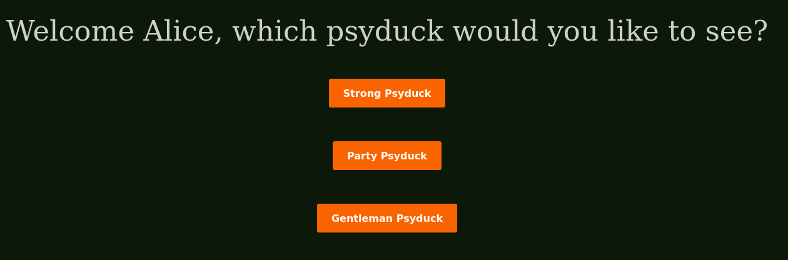
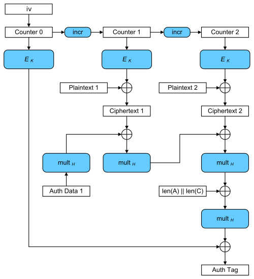

DDC-Qualifiers 2023 Download
Authenticated Privilege [1]
Description
We are given a website and a download link to the source code.
Proposed difficulty: Very Hard
Kategori: CryptographyOpgave beskrivelse Nu er det nok med bit flips og usikre hjemmesider. Vi bruger kun den stærkeste autentificerede kryptering til vores cookies!
Held og lykke!
TLDR
Nonce reuse through an optional parameter "nonce", allows us to recover the GCM authentication key H. By crafting a nonce that GHASHes into "flag.png", we can obtain the encryption for said string, essentially forging the id for flag through reuse of the secret key. We can then forge a ciphertext through bit-flipping, and a corresponding tag using H. Passing it all to the server gives us the image, which contains the flag.
Initial recon
Opening the provided website, we are taken to a simple page, with the option of registering as either Alice or Bob:
Clicking either button, we are taken to a new page, with the option of viewing various psyducks:

Clicking either strong or party yields an image, but clicking gentleman gives an error message, requiring some form of admin access. Checking dev tools, the initial registration yields a cookie, and the individual psyducks are requested via a hex token, presumably checked against your cookie permissions.
Investigating the code
As we are also provided with a source, that is the obvious next course of action. Here is the source code for the app:
#!/usr/bin/env python3
from flask import Flask,request,Response,render_template,abort,make_response
import json,random,os,base64
import logging
from Crypto.Cipher import AES
from Crypto.Util.Padding import pad, unpad
from hashlib import sha256
import time
### Global variables
app = Flask(__name__)
secret_key = os.urandom(16)
# create valid encryptions for my images!
def encrypt_request(imagename):
pt = imagename.encode()
pt = pad(pt,16)
cipher = AES.new(secret_key, AES.MODE_ECB)
ct = cipher.encrypt(pt).hex()
return ct
# create valid encryptions for my images!
def decrypt_request(duck_id):
ct = bytes.fromhex(duck_id)
cipher = AES.new(secret_key, AES.MODE_ECB)
paddedpt = cipher.decrypt(ct)
pt = unpad(paddedpt,16).decode()
return pt
# My images!
images = ["fast.png", "gentleman.png", "panic.png", "party.png", "strong.png", "flag.png"]
encrypted_requests = {}
# Create image Identifiers for publicly available images
for image in images[:-1]:
encrypted_requests[image] = encrypt_request(image)
# create secure AES_GCM authenticated user cookie!
def gen_user_cookie(username, nonce = None):
if nonce == None:
nonce = os.urandom(12)
cookie_dict = {}
cookie_dict["username"] = username
cookie_dict["admin_access"] = False
pt = json.dumps(cookie_dict).encode()
cipher = AES.new(secret_key, AES.MODE_GCM, nonce = nonce)
ct, tag = cipher.encrypt_and_digest(pt)
cookie = nonce.hex() + "." + ct.hex() + "." + tag.hex()
return cookie
# decode cookie!
def decode_cookie(cookie):
cookie = cookie.split(".")
nonce, ct, tag = [bytes.fromhex(x) for x in cookie]
cipher = AES.new(secret_key, AES.MODE_GCM, nonce = nonce)
pt = cipher.decrypt_and_verify(ct,tag).decode()
cookie_dict = json.loads(pt)
return cookie_dict
@app.route('/view')
def viewPsy():
user_cookie = request.cookies.get('permissions')
duck_id = request.args.get('psyduck')
if user_cookie == None:
return Response("No cookie set")
try:
cookie_dict = decode_cookie(user_cookie)
except:
return Response("Something went wrong with your cookie")
try:
requested_duck = decrypt_request(duck_id)
except:
return Response("something went wrong during decryption of your duck id")
if requested_duck not in images:
return Response("invalid duck requested")
username = cookie_dict["username"]
access_level = cookie_dict["admin_access"]
if not requested_duck in ["strong.png", "party.png"] and not access_level:
return Response("Psyducks other than strong duck and party duck require admin access to view.")
with open(f'./images/{requested_duck}', 'rb') as f:
return Response(f.read(), mimetype='image/png')
@app.route('/register')
def register():
username = request.args.get('username')
if username == None:
return Response("attempted to register without username")
# nonce api for tesing
nonce = request.args.get('nonce')
try:
assert not nonce == None
nonce = bytes.fromhex(nonce)
assert len(nonce) == 16
cookie = gen_user_cookie(username, nonce)
except:
cookie = gen_user_cookie(username)
res = make_response()
res.set_cookie('permissions', cookie)
with open('./templates/view.html', 'r') as f:
data = f.read()
data = data.replace("ZZuserZZ", username)
data = data.replace("ZZstrongZZ", encrypted_requests["strong.png"])
data = data.replace("ZZpartyZZ", encrypted_requests["party.png"])
data = data.replace("ZZgentlemanZZ", encrypted_requests["gentleman.png"])
res.set_data(data)
return res
def browsePsy():
user_cookie = request.cookies.get('permissions')
if user_cookie == None:
return Response("No cookie set")
try:
cookie_dict = decode_cookie(user_cookie)
except:
return Response("Something went wrong with your cookie")
username = cookie_dict["username"]
res = make_response()
with open('./templates/view.html', 'r') as f:
data = f.read()
data = data.replace("ZZuserZZ", username)
data = data.replace("ZZstrongZZ", encrypted_requests["strong.png"])
data = data.replace("ZZpartyZZ", encrypted_requests["party.png"])
data = data.replace("ZZgentlemanZZ", encrypted_requests["gentleman.png"])
res.set_data(data)
return res
@app.route("/")
def index():
user_cookie = request.cookies.get('permissions')
if user_cookie == None:
res = make_response()
with open('./templates/register.html', 'r') as f:
res.set_data(f.read())
return res
else:
return browsePsy()
if(__name__ == '__main__'):
app.run(host='0.0.0.0')
There's a lot to unpack. Going backwards, we must first identify our goal. Considering the existence of a "flag.png" in the images list, a good guess would be, that we have to get that image. We first check the viewPsy function:
@app.route('/view')
def viewPsy():
user_cookie = request.cookies.get('permissions')
duck_id = request.args.get('psyduck')
if user_cookie == None:
return Response("No cookie set")
try:
cookie_dict = decode_cookie(user_cookie)
except:
return Response("Something went wrong with your cookie")
try:
requested_duck = decrypt_request(duck_id)
except:
return Response("something went wrong during decryption of your duck id")
if requested_duck not in images:
return Response("invalid duck requested")
username = cookie_dict["username"]
access_level = cookie_dict["admin_access"]
if not requested_duck in ["strong.png", "party.png"] and not access_level:
return Response("Psyducks other than strong duck and party duck require admin access to view.")
with open(f'./images/{requested_duck}', 'rb') as f:
return Response(f.read(), mimetype='image/png')
This function does a couple of things:
- Decode the user cookie
- Decode the users request
- Check that the users request is valid
- Check if user cookie has permissions to view given psyduck
Jumping into the cookie first, we have the following functions:
# create secure AES_GCM authenticated user cookie!
def gen_user_cookie(username, nonce = None):
if nonce == None:
nonce = os.urandom(12)
cookie_dict = {}
cookie_dict["username"] = username
cookie_dict["admin_access"] = False
pt = json.dumps(cookie_dict).encode()
cipher = AES.new(secret_key, AES.MODE_GCM, nonce = nonce)
ct, tag = cipher.encrypt_and_digest(pt)
cookie = nonce.hex() + "." + ct.hex() + "." + tag.hex()
return cookie
# decode cookie!
def decode_cookie(cookie):
cookie = cookie.split(".")
nonce, ct, tag = [bytes.fromhex(x) for x in cookie]
cipher = AES.new(secret_key, AES.MODE_GCM, nonce = nonce)
pt = cipher.decrypt_and_verify(ct,tag).decode()
cookie_dict = json.loads(pt)
return cookie_dict
The user cookie is an encrypted dictionary, containing the username and the admin privilege. It is encrypted via AES GCM, making it seemingly safe to the bit-flipping attack that was used in flipping privilege. GCM has an authentication tag specific to a given nonce, key and ciphertext: the ciphertext cannot be modified, as the decrypt_and_verify function would throw an error.
The next thing to check out, is the request decoding:
# create valid encryptions for my images!
def encrypt_request(imagename):
pt = imagename.encode()
pt = pad(pt,16)
cipher = AES.new(secret_key, AES.MODE_ECB)
ct = cipher.encrypt(pt).hex()
return ct
# create valid encryptions for my images!
def decrypt_request(duck_id):
ct = bytes.fromhex(duck_id)
cipher = AES.new(secret_key, AES.MODE_ECB)
paddedpt = cipher.decrypt(ct)
pt = unpad(paddedpt,16).decode()
return pt
An extra layer of security it seems. In order to request a given psyduck, we would have to know the padded and encrypted value of that psyduck.
This challenge seems to pose two problems: The ability to forge a ciphertext and authentication tag for an admin user, and the ability to pass the encrypted value of "flag.png" to the website.
Nonce reuse (AKA the forbidden attack)
If you look at the code for register you'll see a very sus piece of code:
# nonce api for tesing
nonce = request.args.get('nonce')
try:
assert not nonce == None
nonce = bytes.fromhex(nonce)
assert len(nonce) == 16
cookie = gen_user_cookie(username, nonce)
except:
cookie = gen_user_cookie(username)
nonce api for testing? Don't mind if i do. The ability to choose the nonce is game breaking for the GCM cipher.
To explain why, we must understand a few things about AES GCM. The following diagram will be useful:

The iv is used to create counter 0, also called $j_0$. $j_0$ is then encrypted, creating the value called HF (not shown in graph). For each block of plaintext, $j_0$ is incremented to $j_i$, which is then encrypted and XOR'ed by the plaintext block, creating the ciphertext block. The authentication tag is then computed as $GHASH(H, A, C)$ XORed by HF.
Keep in mind, that XOR in relation to GHASH is defined as addition in the characteristic 2 finite field. Even then, it's completely the same, and i'm neither a mathematician nor a cryptologist. Just know, that bytes, ints and polynomials can be losslessly converted between one another, and XOR is generally used when working with bytes and ints. In the following section, using the polynomial representation is useful to showcase the exploit.
The significant thing, is what happens when the nonce is reused for two different plaintexts. As HF is only dependent on the key and the nonce, it remains the same. Assuming we have only one plaintext block, the tag would be defined by the following polynomial:
where $AD$ is the associated/additional data, $C$ is the ciphertext block, $L$ is the length of $AD$ and $CT$ and $HF$ is the masking block generated by encrypting $j_0$. As addition is equivalent to XOR, adding the two tags together effectively washes out HF, since it is the same. It effectively becomes the following polynomial:
As associated data, ciphertext and length are all known, this leaves a known polynomial with the authentication key H as a root. We can then factor the polynomial to get the key. In our scenario, this becomes easier. We are working with two blocks of plaintext/ciphertext, but to balance that, $AD$ is not included, and $L_1=L_2$, reducing the polynomial to:
With bigger plaintexts, factoring would result in multiple possible authentication keys, but with a small plaintext, it should return the correct H. As a quick mention, i would have understood nothing had it not been for this writeup.
With the authentication key recovered, forging a tag is trivial. We must simply calculate $GHASH(H, AD, C_{new})+HF$, with $HF=GHASH(H, AD, C_1)+T_1$ for one of the original pairs of ciphertext and tag. This authentication tag is now valid for the provided ciphertext $C_{new}$. Notice that $C_{new}$ can be forged by simple XOR bit-flip, just like with AES CTR.
Encryption forgery
With that, we are able to forge an authentication tag for any given ciphertext we want. But we are still not ready to solve the challenge: we do not have the id to request flag.png. Examining the code, yields no major clues as to how we would be able to get it. The secret key seems entirely safe, and even if we could recover the secret key, it would make the nonce reuse irrelevant. We also can't trick the code into encrypting "flag.png": it only calls the encryption once, and it's outside our control.
Here we have to get a little creative. Looking at the code, we see a curious thing:
def encrypt_request(imagename):
...
cipher = AES.new(secret_key, AES.MODE_ECB)
...
def gen_user_cookie(username, nonce = None):
...
cipher = AES.new(secret_key, AES.MODE_GCM, nonce = nonce)
Both the request scheme and authentication scheme makes use of the same secret key! With a bit of research, it is revealed, that AES GCM uses ECB as a backend encryption algorithm. Well, it's unfair to call it ECB, as all AES encryption is based on the single block encryption scheme that ECB uses. Bringing out the diagram again:
We see that the iv is encrypted into the mask HF. Notably, we are in control of the value $j_0$ that is passed to the encryption. As we can easily calculate the mask HF, placing any string in $j_0$ will result in HF becoming that string, but encrypted. That is exactly what we need: an oracle to get the encryption of the value "flag.png".
This is where GCM comes along to ruin the day. As GCM is defined, for any nonce with input size other than 12, it is actually passed through GHASH before becoming $j_0$. If you remember the code:
assert len(nonce) == 16
this would seem to be our problem. In order to get the correct value in $j_0$, we would need to know the plaintext that hashes into "flag.png". This actually took me quite a while to figure out. I went in with the assumption that hashes couldn't be reversed: that's crypto 101, right? Let this be a lesson to myself, that you should never take your knowledge for granted. Specifically, GHASH is actually the exception to that rule.
The GHASH algorithm is defined as follows (source):
Define:
-
Let X be the input bit string of length $128m$.
-
Let H be the hash subkey.
-
Let $X_1$, $X_2$, ..., $X_{m-1}$, $X_m$ denote the unique sequence of blocks, such that $X=X_1||X_2||...||X_{m-1}||X_m$.
-
Let $Y_0$ be the "zero block", $0^{128}$.
For $i=1, ..., m$, let $Y_i=(Y_{i-1}\space\newcommand*\xor{\oplus}\space X_i)\cdot H$.
Return $Y_m$.
In implementations of GHASH, the length of associated data and ciphertext are added on the back as another block. As such, for our single block input, this is the same as:
where $X_1$ is the length of associated data and ciphertext concatenated. The critical thing here, is our ability to reverse this. The XOR is simple to reverse, the multiplication is a little harder. Here we must use the multiplicative inverse of $H$, or $H^{-1}$. $H^{-1}$ is defined as the polynomial that fulfills the statement $H\cdot H^{-1}=1$. In other words, it can be used to reverse GHASH. As such, reversing GHASH (in our case) amounts to the following psudocode:
p = T
p *= H ^ -1
p += len(AD) || len(C)
p *= H ^ -1
return p
Since associated data is null, it is reduced to only the length of ct.
With this, we are able to calculate the given value that GHASHes into the string "flag.png". Passing this value as a nonce, we are able to recover HF by XORing the GHASH and tag. This HF would then be equal to the encrypted value "flag.png", and we can pass it to the server.
Solution
I based my solution on code that can be found here. The script must be run with sage, as that is what does all the magic. I swear to god, if i had to implement this myself, i wouldn't have solved this challenge. Note, that the script will not run if using the file extension .sage. Instead, use .py as if it was a plain python file. Be sure to have pycryptodome install in sage.
"""
Original code: https://github.com/jvdsn/crypto-attacks/blob/master/attacks/gcm/forbidden_attack.py
"""
from sage.all import GF
from Crypto.Util.number import long_to_bytes
from Crypto.Util.strxor import strxor
import requests
x = GF(2)["x"].gen()
gf2e = GF(2 ** 128, name="y", modulus=x ** 128 + x ** 7 + x ** 2 + x + 1)
# Converts an integer to a gf2e element, little endian.
def int_to_gf2e(n):
return gf2e([(n >> i) & 1 for i in range(127, -1, -1)])
# Converts a gf2e element to an integer, little endian.
def gf2e_to_int(p):
n = p.integer_representation()
ans = 0
for i in range(128):
ans <<= 1
ans |= ((n >> i) & 1)
return ans
# Converts a gf2e element to bytes, little endian
def gf2e_to_bytes(s):
return gf2e_to_int(s).to_bytes(16, byteorder="big")
# Converts bytes to a gf2e element, little endian
def bytes_to_gf2e(s):
return int_to_gf2e(int.from_bytes(s, byteorder="big"))
# Reverse the ghash function applied to single block input, taking standard padding into account
def reverse(h, t):
p = bytes_to_gf2e(t)
p *= h**-1 # First inversion
p += bytes_to_gf2e(b"\x00" * 8 + long_to_bytes(8 * 16, 8)) # ghash is by default padded with additional data and length of plaintext
p *= h**-1 # Second inversion
return gf2e_to_bytes(p)
# Calculates the GHASH polynomial.
def ghash(h, a, c):
"""
Calculates the ghash for a given H, ciphertext and additional data
:param h: the authentication key to use (gf2e element)
:param a: the associated data of the message with the known tag (bytes)
:param c: the ciphertext of the message with the known tag (bytes)
:return: the ghashed value (gf2e element)
"""
la = len(a)
lc = len(c)
p = gf2e(0)
for i in range(la // 16):
p += int_to_gf2e(int.from_bytes(a[16 * i:16 * (i + 1)], byteorder="big"))
p *= h
if la % 16 != 0:
p += int_to_gf2e(int.from_bytes(a[-(la % 16):] + bytes(16 - la % 16), byteorder="big"))
p *= h
for i in range(lc // 16):
p += int_to_gf2e(int.from_bytes(c[16 * i:16 * (i + 1)], byteorder="big"))
p *= h
if lc % 16 != 0:
p += int_to_gf2e(int.from_bytes(c[-(lc % 16):] + bytes(16 - lc % 16), byteorder="big"))
p *= h
p += int_to_gf2e(((8 * la) << 64) | (8 * lc))
p *= h
return p
def recover_possible_auth_keys(a1, c1, t1, a2, c2, t2):
"""
Recovers possible authentication keys from two messages encrypted with the same authentication key.
More information: Joux A., "Authentication Failures in NIST version of GCM"
:param a1: the associated data of the first message (bytes)
:param c1: the ciphertext of the first message (bytes)
:param t1: the authentication tag of the first message (bytes)
:param a2: the associated data of the second message (bytes)
:param c2: the ciphertext of the second message (bytes)
:param t2: the authentication tag of the second message (bytes)
:return: a generator generating possible authentication keys (gf2e element)
"""
h = gf2e["h"].gen()
p1 = ghash(h, a1, c1) + int_to_gf2e(int.from_bytes(t1, byteorder="big"))
p2 = ghash(h, a2, c2) + int_to_gf2e(int.from_bytes(t2, byteorder="big"))
for h, _ in (p1 + p2).roots():
yield h
def forge_tag(h, a, c, t, target_a, target_c):
"""
Forges an authentication tag for a target message given a message with a known tag.
This method is best used with the authentication keys generated by the recover_possible_auth_keys method.
More information: Joux A., "Authentication Failures in NIST version of GCM"
:param h: the authentication key to use (gf2e element)
:param a: the associated data of the message with the known tag (bytes)
:param c: the ciphertext of the message with the known tag (bytes)
:param t: the known authentication tag (bytes)
:param target_a: the target associated data (bytes)
:param target_c: the target ciphertext (bytes)
:return: HF value to xor to tag (bytes), the forged authentication tag (bytes)
"""
source_ghash = gf2e_to_int(ghash(h, a, c))
target_ghash = gf2e_to_int(ghash(h, target_a, target_c))
HF = source_ghash ^ int.from_bytes(t, byteorder="big")
return HF.to_bytes(16, byteorder="big"), (HF ^ target_ghash).to_bytes(16, byteorder="big")
def register(username, nonce):
resp = requests.get(register_url.format(username, nonce))
ct, tag = resp.headers["Set-Cookie"].split("=")[1].split(";")[0].split(".")[1:]
return bytes.fromhex(ct), bytes.fromhex(tag)
def view(psyduck, cookies):
resp = requests.get(view_url.format(psyduck), cookies=cookies)
return resp.content
register_url = "http://authpriv.hkn/register?username={}&nonce={}"
view_url = "http://authpriv.hkn/view?psyduck={}"
# register_url = "http://127.0.0.1:5000/register?username={}&nonce={}"
# view_url = "http://127.0.0.1:5000/view?psyduck={}"
if __name__ == "__main__":
print("Starting first round of requests:")
nonce = (b"\x00" * 16).hex() # Temporary nonce before H is calculated
c1, t1 = register("A", nonce) # Register with username A
c2, t2 = register("B", nonce) # Register with username B
print(f"ciphertext A:\t\t\t{c1.hex()}")
print(f"ciphertext B:\t\t\t{c2.hex()}")
print(f"tag A:\t\t\t\t{t1.hex()}")
print(f"tag B:\t\t\t\t{t2.hex()}")
print("\nCalculating intermediate values:")
p1 = b'{"username": "A", "admin_access": false}' # Known plaintext for user A
p2 = b'{"username": "B", "admin_access": false}' # Known plaintext for user B
target_p = b'{"username": "A", "admin_access": true }' # Target plaintext granting admin access
mask = strxor(p1, target_p) # Calculate XOR difference between source and target
h = next(recover_possible_auth_keys(b"", c1, t1, b"", c2, t2)) # Recover H from nonce reuse
t = b"flag.png\x08\x08\x08\x08\x08\x08\x08\x08" # Target GHASH, padded by PKCS#7
ghash_input = reverse(h, t) # Reverse ghash with 8 * 16 as X_2
print(f"h:\t\t\t\t{gf2e_to_bytes(h).hex()}")
print(f"forged nonce:\t\t\t{ghash_input.hex()}")
print(f"nonce ghash:\t\t\t{gf2e_to_bytes(ghash(h, b'', ghash_input))}") # Validate that it ghashes to the correct value (flag.png)
print("\nStarting final round of requests:")
nonce = ghash_input.hex() # Reversed GHASH is new nonce
cn, tn = register("A", nonce) # As nonce has changed, user A will encrypt differently
target_c = strxor(cn, mask) # Just like CTR, ciphertext can be forged by XOR'ing
flag_id, target_t = forge_tag(h, b"", cn, tn, b"", target_c) # Forge valid tag for new ciphertext
print(f"ciphertext:\t\t\t{cn.hex()}")
print(f"tag:\t\t\t\t{tn.hex()}")
print(f"ciphertext target:\t{target_c.hex()}")
print(f"tag target:\t\t\t{target_t.hex()}")
print(f"flag id:\t\t\t{flag_id.hex()}")
content = view(flag_id.hex(), {"permissions": f"{nonce}.{target_c.hex()}.{target_t.hex()}"})
with open("flag.png", "w+b") as f:
f.write(content)
print("\nContents writen to flag.png")
The code does a single pass with the username "A" and "B". It then uses the tag and ciphertext to recover H. Knowing H, it can forge a plaintext that GHASHes into "flag.png". It passes this nonce back into the server with the username "A". It can now calculate the target ciphertext with bit-flip, forge a valid tag with H, and then download the coveted image from the server.